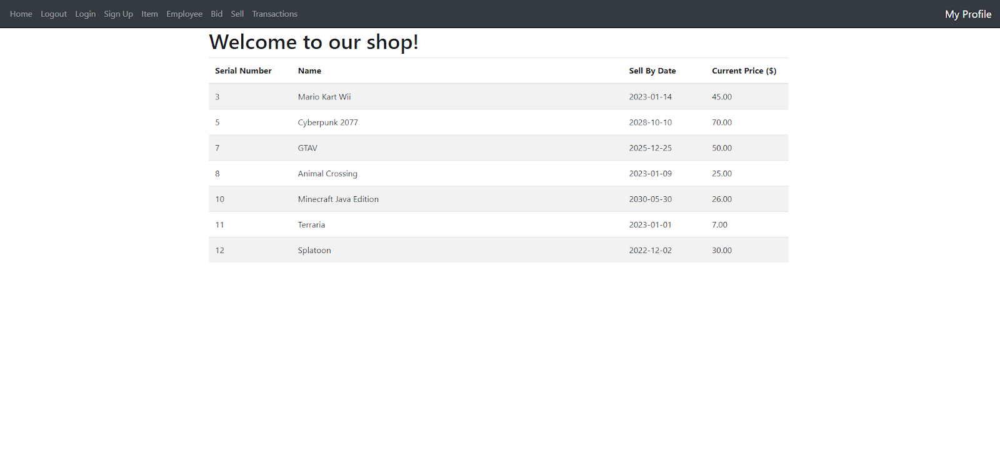
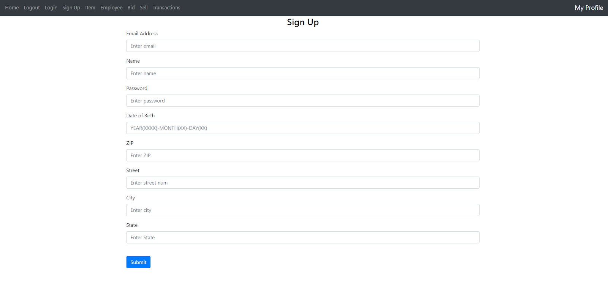

About Me:
I am a student at the University of South Florida currently majoring in Computer Science.
I am currently a senior and plan to graduate soon in the Fall semester of 2023. I started coding with Java around the Sophomore year of Highschool
and continued to enjoy coding since then.
Betting and Selling Game Store
The Betting and Selling Game Store was a project created in a three person team as an end of term project for my database class. The idea of this
project was to allow users of our website the ability to bid and sell games and other merchadise to other users in the website.
These items would be stored into a database.
Here are more features our team implemented for the project:
- Accounts - Our website supports creating accounts and storing the into a table in the database. Our backend of the system would not allow accounts with duplicate emails to be formed.
- Sessions - User's session are tracked and allowed 10 minutes per session. User's are allowed to close and come back to our website and do not have to log back in again. After 10 minutes, users will have to log back in.
- Permissions - Our website has three different levels of permissions enforced by our backend as well as PostgreSQL permissions:
- Viewer - Viewers are allow to look at the items and create an account, but are not allowed to bid, sell, or access our account profile.
- User-Account - Users are allow to bid, sell, logout, create an account, access and change profile, but are not allowed to access logged information.
- Employee-Account - Employees are allowed to delete items from the database which is meant to indicate sales, view account info, logout, and create an account. They are not allowed to sell and bid.
- Logging Transactions - Every item is associated with a sell ID, and if bought, is listed with the buyer ID. Each time a user places a bid or sells, a seperate
database table is will record the action.



Facial Biometric Recognition System
The facial biometric recognition system was an end of term class project created for my mobile biometric system class. The idea of the system
was to obtain a database of facial pictures to test from. This information was primary obtained from daily selfies from the class that semester.
The system would first extract features from those pictures, the features selected from this system was 68 landmarks on the face. Some of these extracted features
were stored into a template database to test while the rest were used to train selected classifiers to increase accuracy of positive matches. The results of the system
form multiple types of graphs.